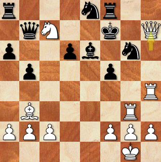

Davor Krivić - biografija
KRIVIĆ, Davor (Kraj, Otok Pašman, 5. XI. 1943.), velemajstor u dopisnom šahu i sportski djelatnik. Sin Grge i Vice, rođ. Paić. Završio je gimnaziju i Višu ekonomsku školu u Puli.
U Pulu se doselio s obitelji 1949.

Za šah se zainteresirao u djetinjstvu, a ozbiljnije ga je počeo igrati kao gimnazijalac. Bio je član Šahovskog kluba Pula od 1963. do 1988.
Paralelno se 1970-ih godina počeo natjecati za pulski ŠK Uljanik na prvenstvima u dopisnom šahu. Najveće uspjehe u šahovskoj karijeri postigao je na natjecanjima u dopisnom šahu,
koja se održavaju u ciklusima od dvije ili više godina. Prije je igrao putem poštanskih dopisnica, potom dopisivanjem pomoću osobnog računala, a danas preko web servera.
- Na pojedinačnom Prvenstvu Jugoslavije 1980. - 1981. podijelio je 7. i 8. mjesto.
- Na prvom pojedinačnom republičkom Prvenstvu Hrvatske 1981. - 1982. osvojio je 1. mjesto.
Tim je rezultatom stekao naslov prvog hrvatskog majstora dopisnog šaha. S Uljanikom je na ekipnim prvenstvima države bio:
- Treći 1980. - 1981.
- Četvrti 1974. - 1975. i 1978. - 1979.
- Šesti 1976. - 1977.
- Sedmi 1982. - 1983
- Deseti 1984. - 1985.
U toj generaciji Uljanika, koja je desetak godina bila u vrhu jugoslavenskog dopisnog šaha, uz njega su se najviše isticali igrači Josip Nadenić, Aleksandar Vlahović i Milan Marčeta.
S reprezentacijom Hrvatske nastupio je 4 puta na Turniru republika i pokrajina Jugoslavije i postigao više zapaženih plasmana.
Nakon osamostaljenja Republike Hrvatske bio je tri puta pojedinačni prvak države:
- 1993. - 1995.
- 1995. - 1997.
- 2001. - 2002.
